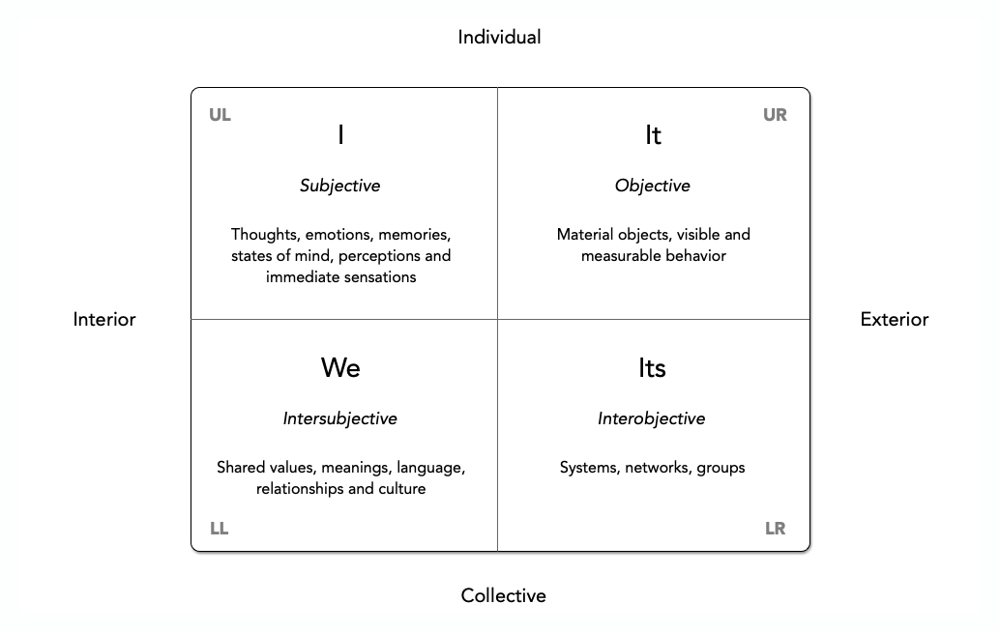

The Four Quadrants of Human Knowledge
26 Oct 2012 · 8 min read
topics: integral

I first came across Ken Wilber’s work late in the last century when a friend handed me a copy of A Brief History of Everything as a birthday present.
Since then, Wilber’s influence has been cited by figures as diverse as Bill Clinton and Deepak Chopra, which should give you some idea of how broadly his work can be applied. A Salon interview with Wilber from back in 2008 is a good, brief introduction to the man and some of his thoughts.
Wilber’s work is tremendously dense, deep and broad and deserving of further study, and I can’t hope to do justice to it in a couple of blog posts. However, Wilber offers a couple of models that I think deserve greater exposure and more general application, so I will attempt to give you my understanding of them in this post and a succeeding one.
Let me start with the Four Quadrants model.
Wilber has described four quadrants of human knowledge, each representing a different and valid perspective on the same reality.
The four quadrants are formed by the intersection of two dimensions.
The first dimension (left or right) can be expressed as either interior or exterior. The second dimension (up or down) can be expressed as either individual or collective. Combining these, we get the four quadrants.
UL. Interior of an Individual (Upper Left) — This is reality viewed from the ‘I’ perspective, what things look like and feel like to me as an individual. As an example, Freudian psychology is based on this perspective.
UR. Exterior of an Individual (Upper Right) — This is reality viewed from an “it” perspective. In psychology, Skinner’s behaviorism is an example. Knowledge is based on observation of the behavior of individuals acting in isolation, without reference to any interior feeling states.
LL. Interior of a Collective (Lower Left) – This is reality viewed from the “We” perspective, what things feel like to us as a collective. Cultural studies are based on this perspective, elucidating how things feel to a group, based on the collective norms and values of the group.
LR. Exterior of a Collective (Lower Right) – This is reality viewed from the “They” perspective, based on the observable behavior of a group. Sociology studies are generally based on this perspective, and include the behaviors of a society.
An understanding of these four quadrants of perception is useful because it helps us understand that very different views of reality (Freudian psychology vs. Skinner’s behaviorism, for example) are not contradictory or mutually exclusive, but rather are complementary. Views from all of these different perspectives may be equally valid, even if they are very different ways of looking at the world.
Note that the two exterior, right-hand views are often lumped together for purposes of discussion.
It’s worth noting that Yuval Noah Harari, in his book Sapiens: A Brief History of Humankind, uses the terms subjective, inter-subjective and objective to describe, respectively, the upper-left, lower-left and right-hand sides of Wilber’s quadrant, defining them like this:
“An objective [right-hand] phenomenon exists independently of human consciousness and human beliefs."
“The subjective [upper-left] is something that exists depending on the consciousness and beliefs of a single individual. It disappears or changes if that particular individual changes his or her beliefs.”
“The inter-subjective [lower-left] is something that exists within the communication network linking the subjective consciousness of many individuals. If a single individual changes his or her beliefs, or even dies, it is of little importance. However, if most individuals in the network die or change their beliefs, the inter-subjective phenomenon will mutate or disappear.”
Wilber has explained some of these differences of perspective as follows.
If you are talking to me about your new car, you are the first person, I am the second person, and the car is the third person. These pronouns actually represent three perspectives that human beings can take when they talk about the world or attempt to know the world…. The fascinating part is that these three perspectives might actually give rise to art, morals, and science. Or the Beautiful, the Good, and the True: the Beauty that is in the eye (or the I) of the beholder; the Good or moral actions that can exist between you and me as a we; and the objective Truth about third-person objects (or its) that you and I might discover: hence, art (I), morals (we), and science (it).
While this is a useful explanation, I tend to think of Art as a human activity that ties these perspectives together in the following way: based on observation of nature and society (“it” and/or “they”), an individual (an “I”), expresses his or her interior reality, creating an object observable by others (an “it”), that gains an appreciative audience (a “we”), and thereby establishes a shared interior reality. In this way, I believe that Art uniquely helps to tie these different perspectives together, providing an integrated, holistic view of human experience.
The Four Quadrants model can be applied in all sorts of contexts, which is part of what makes it so useful. Let me give you a couple of business examples. Take a look at the following words from Rob Austin in his insightful little book, Measuring and Managing Performance in Organizations.
One frequent analogy casts the manager in the role of an airplane pilot guided by organizational measures that are like cockpit instruments.
Mechanistic and organic analogies are flawed because they are too simplistic. Kaplan and Norton’s cockpit analogy would be more accurate if it included a multitude of tiny gremlins controlling wing flaps, fuel flow, and so on of a plane being buffeted by winds and generally struggling against nature, but with the gremlins always controlling information flow back to the cockpit instruments, for fear that the pilot might find gremlin replacements. It would not be surprising if airplanes guided this way occasionally flew into mountainsides when they seemed to be progressing smoothly toward their destinations.
Note that Rob starts with exterior perspectives of collectives: a manager guiding an organization, and a pilot flying an aircraft. But then he goes on to expose the interior feeling (fear) of individuals who are not only being guided, but being asked to objectively report the data on which their performance will be graded! He then suggests the sort of culture (interior) such a collective of “gremlins” might develop in such conditions, and what sort of collective behavior they might exhibit. So, while Austin may not have consciously or explicitly referred to the Four Quadrants model, seeing his work as an example of this model may help us gain similarly powerful insights in other situations.
Here is another example, from Toyota Culture: The Heart and Soul of The Toyota Way, by Jeffrey Liker and Mike Hoseus. Here, Mike tells a story of learning first-hand some of the elements of the Toyota culture.
As a new group leader, I was sent to Tsutsumi to spend a month getting an appreciation of working on the line and mastering one process. The team leaders told us no one would be able to complete the whole job by the end of the month, but I was determined to prove them wrong. I was installing liners underneath the wheel well when my air gun slipped, and the driver bit scratched the paint on the inner lip of the wheel well. I gasped and looked around – no one saw me do it – but they had told me to pull the andon (rope) cord if I made or caught any defect. It was my moment of truth. My first reaction was to let it go. No one would probably see the scratch anyway, and no one would know that I made it. But my conscience got the best of me, and I wanted to see if they really meant what they said about admitting mistakes. So I pulled the andon and the team leader came to fix the problem and showed me how to hold the bit with a free finger in order to stabilize it better: But he did not seem angry at me for making the scratch.
Then at break we gathered for our afternoon group meeting where the group leader gave out information on safety and quality issues and heard back concerns from the members.
They spoke Japanese so I could not understand what they were saying until I heard the words, “Mike-san.” Well that got my attention so I listened carefully…more Japanese and then “scratchee scratchee” …and then more Japanese. So here it was; finally I was going to get called out for messing up and they were going to do it in front of everyone. Then, all of a sudden, the whole group looked at me and clapped and smiled and patted my back and shook my hand as they headed back to the line. I couldn’t believe it, after double checking with an interpreter just to make sure, they were applauding me because I made a mistake and admitted it. I felt like a million bucks, and guess what I did the next time I made a mistake?
Notice how the story talks about individual behavior (Exterior of an Individual), group behavior (Exterior of a Collective), individual feelings (Interior of an Individual) and group culture (Interior of a Collective). And while these are four distinct perspectives, they are all describing the same set of events. Note also that, while these are distinctly different perspectives, they are not unrelated – quite the opposite, in fact: Mike’s story clearly shows how an individual and then a group responded to an event, how the culture was evidenced by the group’s behavior, and then how that behavior made an individual feel, which influenced his future feelings and behavior!
This is the beauty of the Four Quadrants model, in that it gives us a complete picture of reality, and increases our understanding of that reality. Many lean transformation efforts fail, for example, because they are focused only on productivity improvements (Exterior of a Collective) and fail to instill the corresponding cultural elements necessary to support the desired behavior.
Updated on 9 Dec 2016 to add references to Harari’s work.
Thanks for reading! You can also generally follow my work on Medium and Buttondown.
If you’d like a convenient short URL to link to this piece, you can use pract.org/fqhk.html. Or feel free to simply share this piece using one of the social media buttons below!